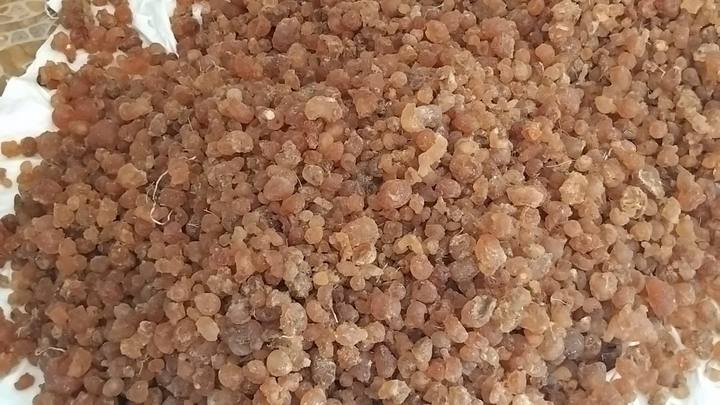
Gum Arabic
Natural acacia gum for the food, beverage and pharmaceutical industries.
Al Dain·Dubai · United Arab Emirates
The House of Livestock & Agriculture Production
Natural commodities, traded from Dubai. Gum arabic, gum talha, sorghum and livestock. Availability, grade and origin are confirmed for each enquiry.
About Us
Welcome to
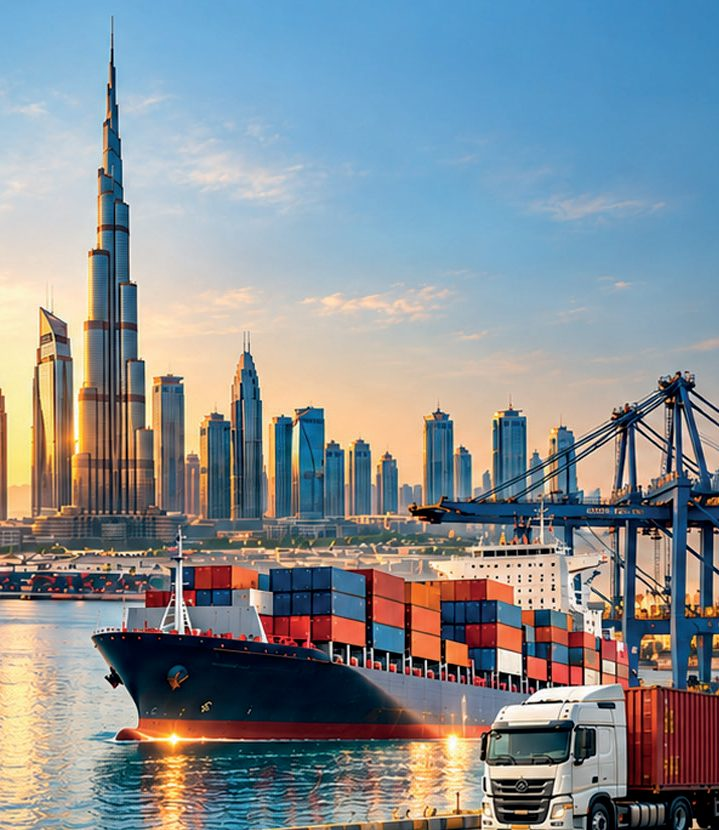
Dubai trade desk
Availability, grade and origin are confirmed for each enquiry. Select any row to ask Bawadi AI.
| Commodity | Origin | Use | Status |
|---|---|---|---|
| Sudan | Food · beverage · pharma | On enquiry | |
| Sudan | Cleaned · sifted · sacked | On enquiry | |
| Sudan | Food · animal feed | On enquiry | |
| Sudan | Live · dest. vet rules | On enquiry | |
| Sudan | Live · dest. vet rules | On enquiry | |
| Sudan | Live · dest. vet rules | On enquiry | |
| Darfur | Oilseed · oil · peanut cake | Group range | |
| Sudan | Oilseed | Group range |
Stage 01 / 07
Darfur and Kordofan remain cornerstone production regions for high-value crops including groundnuts, sesame, sunflower and complementary cash crops. The group complements these with pivot-irrigated fruit and vegetable production and extensive contract-farming programmes in Sudan.
Stage 02 / 07
Since 2001 the group has invested in Hashab (Acacia senegal) plantations and keeps substantial safety stocks of both Hashab and Talha (Acacia seyal) gum.
Stage 03 / 07
The group produces high-oil-content raw peanuts at scale and runs dedicated logistics, including its own fleet of trucks, from the production areas to its crushing and sorting facilities.
Stage 04 / 07
High-quality crude and refined peanut, sesame and cottonseed oils with no additives, on fully automatic feeding and crushing lines.
Stage 05 / 07
In Sudan the group keeps substantial standing herds and fattening capacity across East Darfur (Al Dain), Kordofan (Al Nuhood) and its Omdurman farms.
Stage 06 / 07
In Sudan, the Al-Kadaro Meat Processing Complex provides significant capacity and holds ISO, HACCP and Halal certification.
Stage 07 / 07
From its office in Al Garhoud, the company handles enquiries for natural gums, grain and livestock.
Figures as reported by Bawadi Al Dain Animal & Agricultural Production Co. Ltd (Sudan). They describe that company’s operations, not those of the Dubai trading company.
What We Trade

Natural acacia gum for the food, beverage and pharmaceutical industries.
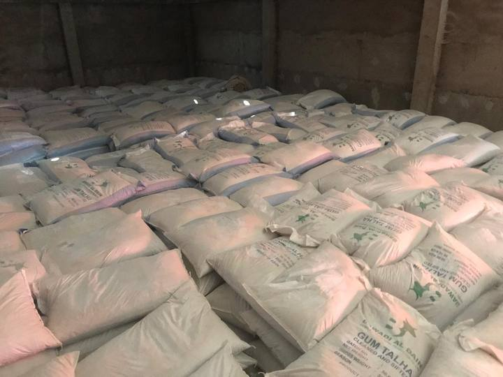
Talha acacia gum, cleaned, sifted and packed in Bawadi Al Dain sacks.
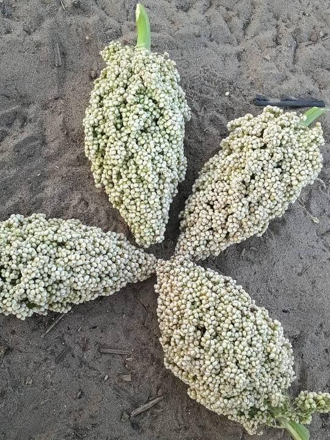
A hardy cereal grain for food and animal feed.
Live animals, in line with each destination’s veterinary and import requirements.
Product lines across the group
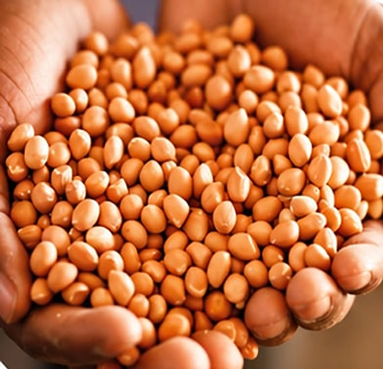
Darfur and Kordofan remain cornerstone production regions for high-value crops including groundnuts, sesame, sunflower and complementary cash crops. The group complements these with pivot-irrigated fruit and vegetable production and extensive contract-farming programmes in Sudan.
In Mauritania, through its sister company Arrahma pour la Production Agricole et Animale – SARL, the group is developing large-scale cultivation of forage crops and commercial agricultural commodities using both rain-fed and irrigated systems. Priority crops include peanuts, soybeans, watermelon seeds, sorghum and maize, and initial rain-fed farming has produced encouraging results. Downstream opportunities include edible oil production, peanut processing, animal-feed manufacturing and exports to regional markets including Algeria, Morocco, Senegal, Mali and Niger.
Similar agricultural development is planned under the group’s new companies in Kenya and Somaliland, to support integrated livestock and feed production.
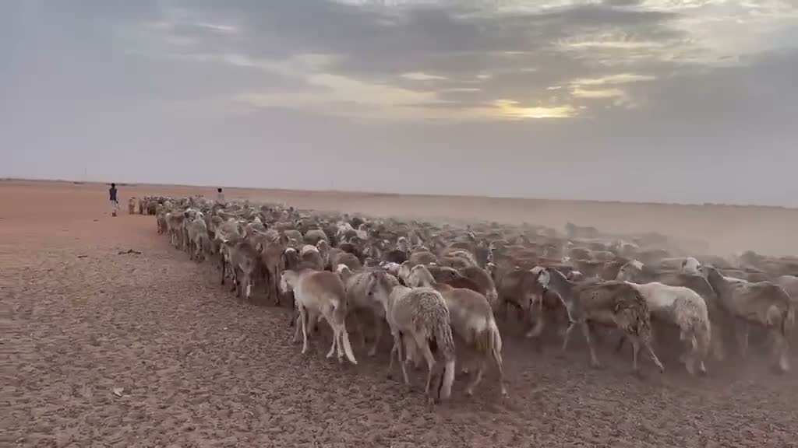
Sudan is a major producer and exporter of live cattle and sheep. Bawadi Al Dain is among the leading suppliers to local and international markets, with a proven record of large-scale exports.
In Sudan the group keeps substantial standing herds and fattening capacity across East Darfur (Al Dain), Kordofan (Al Nuhood) and its Omdurman farms.
In Mauritania, land was acquired in 2023 in the Boghé/Aleg area of the Brakna Region for an integrated livestock quarantine and production facility under Arrahma pour la Production Agricole et Animale – SARL, designed for up to 50,000 head of cattle, sheep and camels. Larger-scale facilities are also under development in Kenya and Somaliland, for local supply and exports to the GCC.
One-humped camels are a key part of the group’s livestock portfolio, ranking immediately after cattle in export importance. They are highly valued across the Gulf and wider Saharan markets.
Bawadi Al Dain sources, aggregates and supplies camels from Sudan. In Mauritania, the Boghé/Aleg livestock facility includes camels within its overall capacity of up to 50,000 head of cattle, sheep and camels. Planned facilities in Kenya and Somaliland will further strengthen regional camel supply for GCC markets.
Since 2001 the group has invested in Hashab (Acacia senegal) plantations and keeps substantial safety stocks of both Hashab and Talha (Acacia seyal) gum. It combines own-farm production, contract farming and large-scale procurement to ensure reliable volumes and consistent quality.
Its work includes R&D collaboration, tappers’ training and quality-improvement programmes across Sudan. The group also sources and trades gum arabic from Mauritania, Senegal, Kenya and Somalia, making it a dependable supplier to global industrial and food markets.
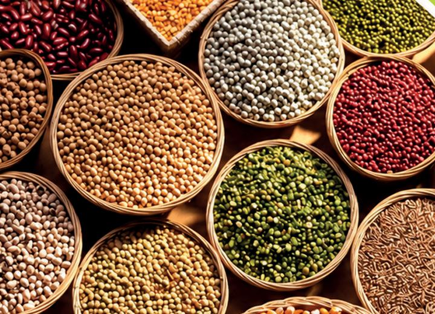
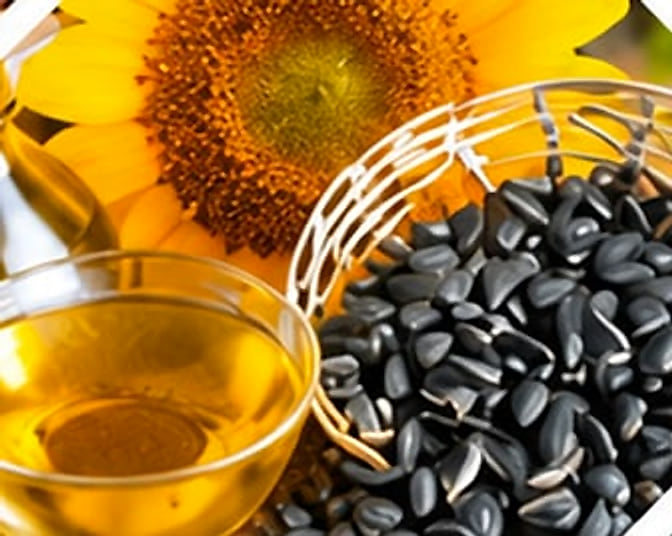
The group holds a strong position in oilseed and grain supply from Sudan, with particular strength in peanuts, sesame, sunflower, gum arabic, hibiscus, baobab, chickpeas, pigeon peas and watermelon seeds. Peanut cake and sorghum feed are important export and local-market products.
Sudan produces over one million tons of peanuts a year. The group produces high-oil-content raw peanuts at scale and runs dedicated logistics, including its own fleet of trucks, from the production areas to its crushing and sorting facilities. Complementary sourcing from Chad, Mauritania, Kenya and Somalia supports volume and continuity for the UAE-based trading operations.
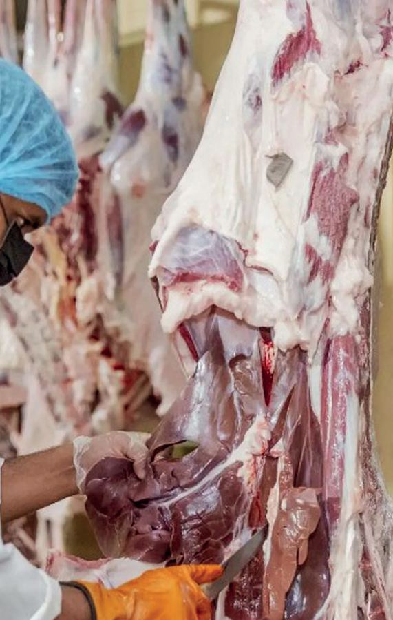
Bawadi Al Dain operates and partners with slaughter and meat-processing facilities that meet international standards for export and domestic markets. Its focus is a value-added chain for cattle, sheep and goats that complies with global quality, food-safety and Halal requirements.
In Sudan, the Al-Kadaro Meat Processing Complex provides significant capacity and holds ISO, HACCP and Halal certification.
In Mauritania, sister company Mauritania Meat Company (MMC) has been set up to operate slaughter facilities for local meat sales, for regional exports to neighbouring countries including Algeria, Morocco, Senegal, Mali and Niger, and for global markets. It is part of the wider integrated investment model, which also includes leather-processing facilities.
In Kenya, Al-Rahma for Development and Animal & Agricultural Production Co. is developing a slaughterhouse alongside its livestock facility, mainly for local sales and exports to the GCC. A similar integrated livestock and slaughterhouse project is planned in Somaliland, for local sales and GCC exports.
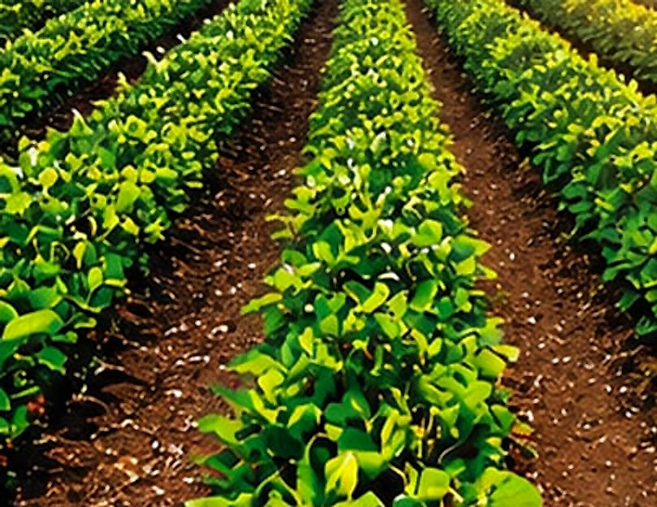
Production in Sudan
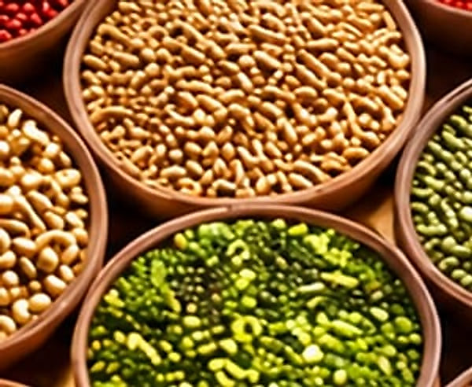
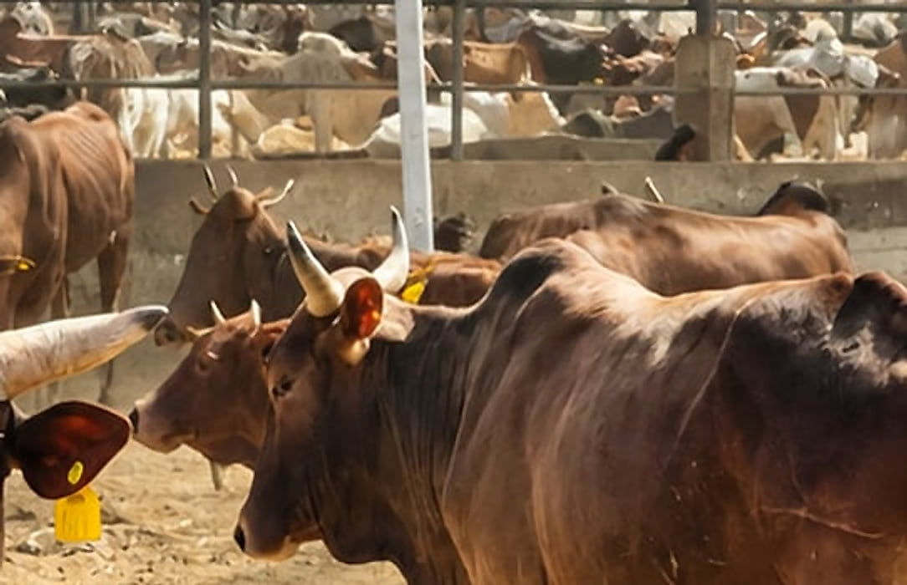
Figures as reported by Bawadi Al Dain Animal & Agricultural Production Co. Ltd (Sudan). They describe that company’s operations, not those of the Dubai trading company.
Agricultural Products
Darfur, one of the company’s production regions, is a major agricultural region of Sudan. Its five cash crops matter to the national economy and are a source of livelihood for families across the region.
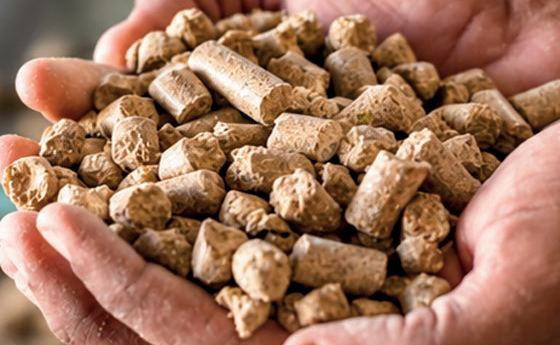
High-quality crude and refined peanut, sesame and cottonseed oils with no additives, on fully automatic feeding and crushing lines. Residues are turned into animal feed (cake).
A modern facility producing high-quality fodder and feed concentrates. It supports fattening and breed-improvement operations and includes agricultural land with fruit trees.
Both factories strengthen the group’s integrated value chain across Sudan and support product supply into the UAE and regional markets.
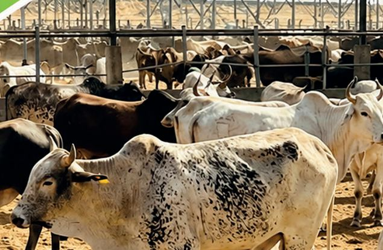
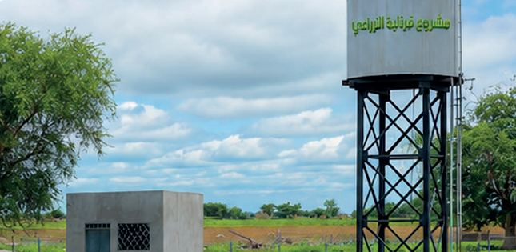
A centre for fattening calves and for breeding sheep and improving their strains, with farms on both sides growing beans, sesame and citrus fruits.
A major crossroads for livestock from across Darfur. Its three water stations are an important reserve for the people of the region. Improved seeds of peanuts, sesame, hibiscus, corn and millet are developed here; sunflower was grown successfully, and horticultural crops were planted for the first time to produce improved fruit.
Regional Expansion
Following disruptions in Sudan, the group has pursued a deliberate regional expansion, building integrated livestock and agricultural operations in new countries, and now extending into Iraq’s Kurdistan Region through a joint venture.
Integrated project in the Boghé/Aleg area (Brakna Region): a livestock quarantine and production facility for up to 50,000 head of cattle, sheep and camels, and agricultural land for forage and commercial crops, with peanuts, soybeans, watermelon seeds, sorghum and maize under cultivation. Feed production, edible oils and exports to neighbouring countries are planned. Sister company Mauritania Meat Company (MMC) operates the associated slaughterhouse, for local sales and regional and global exports.
Livestock facility and slaughterhouse under development, for local sales and exports to the GCC.
Integrated livestock holding and slaughterhouse project under development, for local sales and exports to the GCC.
Animal and agricultural production: livestock quarantine, slaughterhouses, animal feed industries, agro-commodities, and import and export.
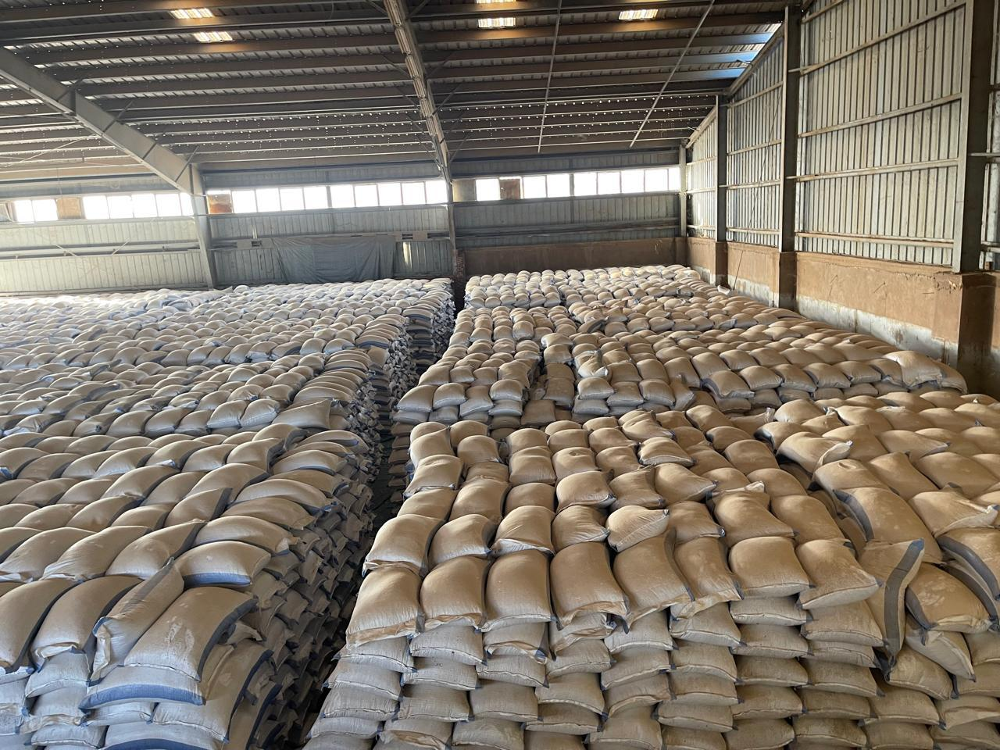
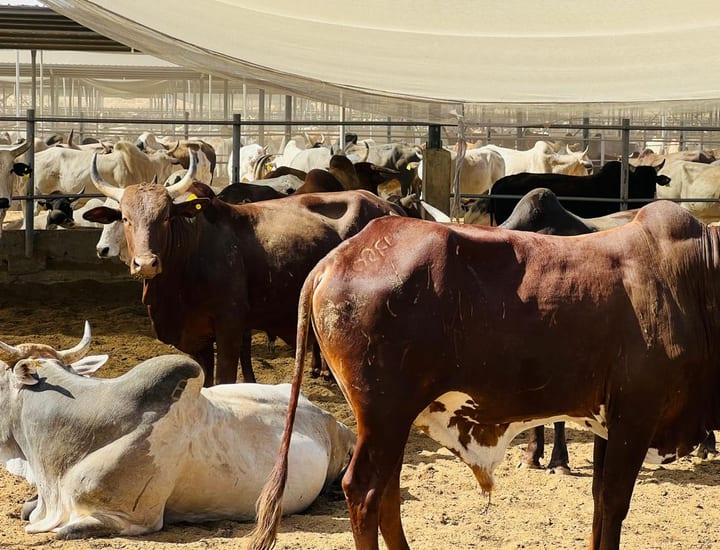
From the UAE
From our base in the UAE, we are committed to delivering sustainable, high-quality products and expanding the reach of African animal and agricultural resources into regional and global markets, with a particular focus on demand in the GCC.
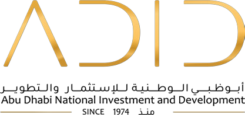
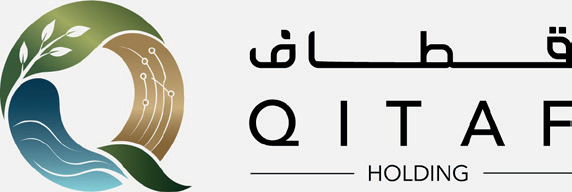
Marhaba! I’m Bawadi AI. Ask about our gum arabic, sorghum, livestock, capacity or certifications — I’ll draft your enquiry for the Dubai trade desk.
Draft trade enquiry · Bawadi Al Dain · Dubai
Draft builds as you chat · +971 55 282 8769 · info@bawadialdaingroup.com
Bawadi AI
Ask about products, capacity, livestock rules or certifications. Your trade enquiry drafts itself as you chat — then send it to the desk on WhatsApp or email.
Availability, grade and origin are confirmed for each enquiry.
Our Gallery
Our products, and the farms and livestock behind them.
The wheel turns by itself and stops when you point at it. Drag, swipe or use the arrow keys to turn it, and select the front card to open it.
Pause the wheelTurn the wheelPlay videoView photoA flock of sheep with its herder
Gum talha sack, cleaned and sifted
Camels in the pens
Carcasses in the meat processing hall
Gum arabic in a woven basket
Cattle in the feedlot
Sacks stacked in the warehouse
Visit to a processing plant
Cattle at the feed troughs
Sacks of gum talha in storage
Filling line for jerrycans
Bulls in the pen
Carcasses on the overhead rail
Warehouse with processing equipment
Cattle in the pens
Processing line at work
Gum arabic nodules, close up
Grain, close up
Inspecting packed products at a plant
Sacks stacked in the warehouse
Cattle pens and feed troughs
Carcasses on the processing line
Sacks of gum talha in storage
Cattle under the shade structures
Gum arabic in a woven basket
Sacks stacked in the warehouse
Sacks stacked in the warehouse
Gum arabic in a woven basket
Sacks stacked in the warehouse
Warehouse aisle between stacked sacks
Gum arabic in a woven basket
Warehouse with processing equipment
Warehouse aisle between stacked sacks
Cattle in a shaded feedlot pen
Cattle under the shade cloth in the feedlot
Raw gum arabic in a woven basket
Gum talha in Bawadi Al Dain sacks
Harvested sorghum heads
Cattle in a livestock pen
Rows of young crops in a cultivated field
Bowls of grains and pulses
A sunflower with its seeds and oil
A handful of shelled peanuts
Dubai skyline behind a container port
Memberships & Licensing
Product, quantity and destination: our Dubai team will reply with availability and terms.
Contact
Our Dubai office replies to every enquiry by email.
Please include the product, quantity and destination.